Lecture 7: Base Shear
From the previous lecture, we learned about the importance of ductility and the expected inelastic performance of buildings. Considering the expected inelastic performance of a structure, this lecture will cover the theory behind the analysis procedure used to determine the seismic forces in a building and the corresponding coefficients used for analysis. The next lecture goes hand-in-hand to explain the analysis procedure in more detail and its application to structures. So, let’s get into it!
This lecture covers the following topics from the exam requirements:
- Mass and Stiffness
- Methods to Determine the Structure’s Fundamental Period
- Selection of Seismic Factors and Coefficients Required for Design
- Static Force Procedures and Formulas
- Structural System Seismic Coefficient Application
- Design Base Shear
Weight for it…!
To be able to determine the seismic forces in a structure, we have to first learn about the different types of loads that can act on a building. Structures are designed for a variety of loads acting on them, depending on their intended contents and building use. Loads are defined as per Section 1.2.1 of ASCE 7-16.
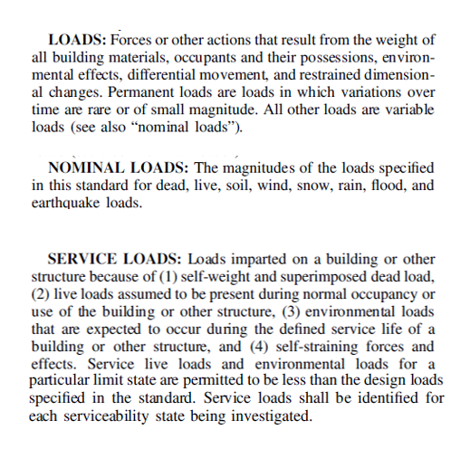These loads can be written as mass or weights. We must not get confused between the two. To clarify what this means, recall the following equation:
Force = mass x acceleration.
Newton would be so proud!
To begin, consider the equation for the weight of a human’s body as:
Body Weight (force in pounds) = Mass x Earth’s Gravity (g)
Our body weight on earth depends on the earth’s gravity. Similarly, if we were standing on the moon, our body weight would be affected by the moon’s gravity. In other words, if you weighed 100 pounds on Earth, you would weigh a mere 16.5 pounds on the Moon. Our weight (force) changed, even though our mass did not. Fascinating, isn’t it?!
Relating this to a seismic event, let us consider a 4-story building that weighs 10 kips. An earthquake strikes with a ground acceleration of 0.4 g. We need to find the lateral forces induced in the structure.
Seismic Lateral Force = (% of) Earth’s Gravity x Weight of the building = 0.4 x 10 = 4 kips
Note: The earthquake (EQ) ground motion is given as a ratio of the earth’s gravity. Here 0.4 g means 40% of earth’s gravity. We must NOT multiply it with the actual value of earth’s gravity. Say, we are given SDS = 1.8 g. Just concentrate on the numerical value. DO NOT MULTIPLY with the actual value of earth’s gravity.
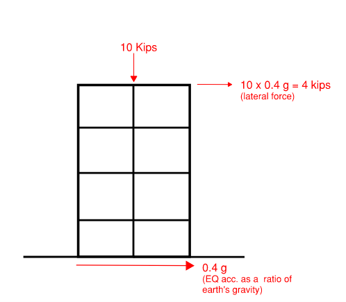At this point, mass and weight are interchangeable terms. As per Section 12.7.2 of ASCE 7, the nomenclature for weight used in seismic force is Effective Seismic Weight, W. It is further explained in the next section.
It’s ALIVE
Various loads act on the structure which generally includes dead, live, earthquake, soil, wind, snow, rain, and flood loads. Chapters 2-8 of ASCE 7-16 are dedicated to these different types of loads. Other than dead and live loads, the rest of the loads are self-explanatory and do not always contribute towards the Effective Seismic Weight of the structure unless above a certain maximum threshold. Dead loads and some exceptions of live loads contribute to the Effective Seismic Weight of the structure.
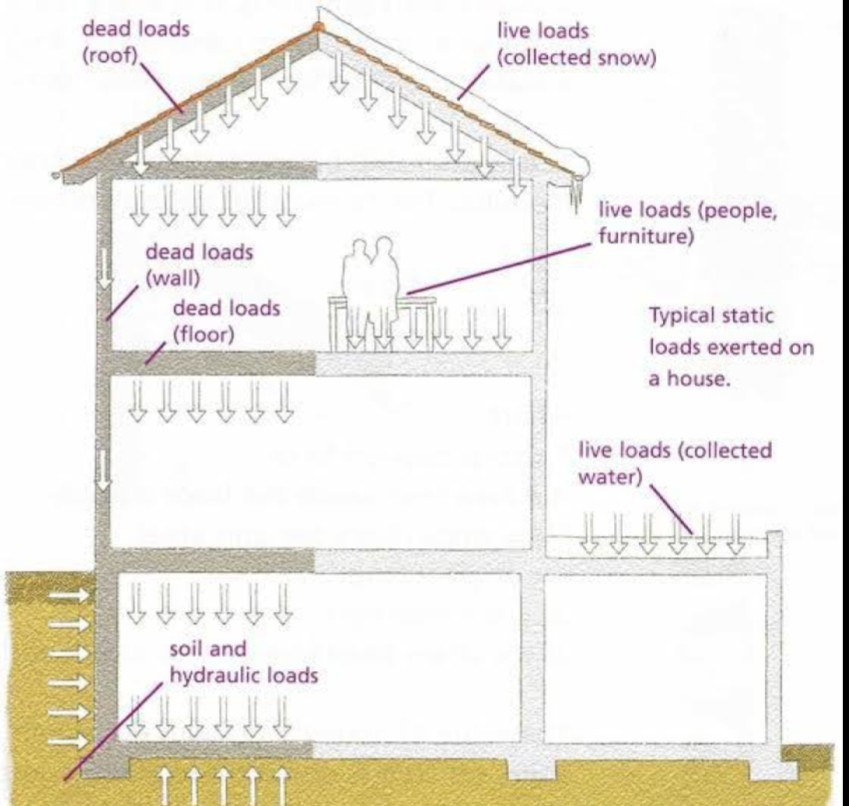Image via quora
So, what are dead loads and live loads?
As per Chapter 3 of ASCE 7-16, dead loads are permanent loads. This includes the parts of a structure that are fixed in place, and not shifted around once the building is fit for occupancy. Examples of dead loads include the actual structural framing, the architectural facade / framing, and the mechanical / electrical systems. Dead loads can also include variable items such as light fixtures, plumbing, and other miscellaneous fixed building pieces that an engineer doesn’t know the exact location of during design, but will contribute to the seismic weight. To account for these variables, there may be a small uniform dead load applied over the entire building floor / wall surface. Dead loads contribute to the lateral forces in the structure due to an earthquake.
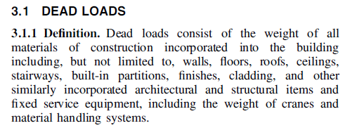Now, imagine you had to paint over the floors and walls of the room you’re currently in. Anything you’d remove to do the job is probably a live load. As per Chapter 4 of ASCE 7-16, live loads are transient loads that can be moved around, which means that their exact position is unknown and not permanent. Because they are not rigidly attached to the structure (which is securely stuck to the earth), the acceleration of the ground is not able to ‘accelerate’ the live load. In that case, there is no force (∵ F = ma)! So, live loads are generally not included in the effective seismic weight of the structure.
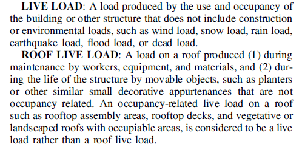As per Section 12.7.2 of ASCE 7-16, dead loads and some exceptions for live loads are included when calculating the Effective Seismic Weight of the structure.
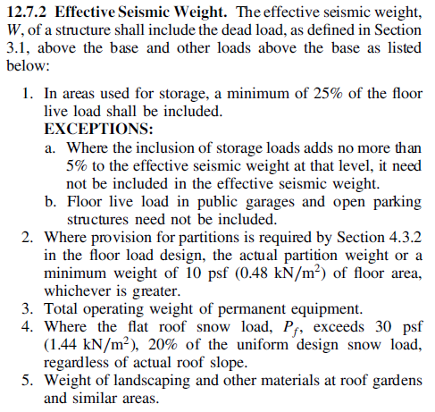The triggers for the inclusion of live loads are large roof snow loads, storage loads, roof gardens, and partitions, which is summarized below:
Conditions where Live Loads are added to the seismic weight: 1: 25% of all storage loads (Live Loads greater than 125 psf) 2: 20% of roof snow loads greater than 30 psf (exact load given on Exam) 3: Roof Gardens (Soil weight would have to be given on Exam) 4: Partitions (10 psf)
The above loads can either be rigidly attached to the structure, or are uniform/heavy enough to stick
to the structure. In one way or another, they would contribute to the inertial mass of an earthquake. Expect this to be on the seismic exam.
Where do I find the storage loads?
Storage loads (and other live loads) come from the expected use of a building or even a single room. They are approximations of the anticipated transient loads defined by the use of the specific area. Each floor could have different rooms with different uses, so the live loads can vary down to the square foot. Architects usually decide the use of the floor or area, then the structural engineer will translate that information into something that best matches an option within the CBC Table 1607.1. For the Seismic Exam, it will be enough to know the following (from CBC Table 1607.1)
Light Storage = 125 psf
Heavy Storage = 250 psf
The CBC Table 1607.1 for live loads can be found at https://up.codes/viewer/california/ibc-2018/chapter/16/structural-design#16
Considering the different types of loads acting on a structure, ASCE 7-16 has load combinations as per Sections 2.3 and 2.4 that factor these loads used to determine the final force on a structural member. An example of load combinations is given in the following figure.
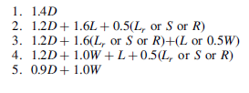where; D = dead load L = Live load Lr = Roof live load S = Snow load R = rain load W = Wind load
These load combinations will be discussed in further detail in the upcoming chapters. For now, it can be noted that the earthquake loads that we determine are at strength level (1.0E), commonly known as LRFD. Therefore, we do not need to do any load combination factoring when determining seismic loads.
Example:
Let’s go through an example for calculating the effective seismic weight, W, of a single floor. Normally, seismic weight includes the walls and roof, but for now we’ll go through the motions with a smaller subset of an overall building.
Example 1: What is the effective seismic weight of a floor with the following characteristics:
- Dimensions: 40ft x 20ft
- Structural Floor surface: 6” thick normal weight concrete one-way slab
- Architectural Floor Finish: Carpet & Misc (3 psf)
- Mechanical / Electrical: 5 psf
- Use: Office Space (with consideration for partitions)
Strategy: We’re looking for the total seismic weight i.e. a single number. We have the floor dimensions, and some information about the weights (psf) of the floor. We also know the anticipated structure use, so we can check if the live load needs to be included. We should determine the total area of the floor, then determine the total seismic weight per square foot, and finally multiply them to get the answer.
Step 1: Overall area. 40ft x 20ft = 800 square ft
Step 2: Dead Loads. 6” concrete = (6/12)’ x 120pcf = 60psf.
Dead Load = 60psf (concrete) + 4psf (carpet) + 5psf (mech/electric) = 68 psf
Step 3: Live Loads. Office Space use requires 50 psf live loading per CBC Table 1607.1. This 50 psf live load is not included in the effective seismic weight. However, there are partitions! We need to include 10 psf of loading to account for the partitions per ASCE 7 12.7.2
Step 4: Effective Seismic Calculation. 800 sq ft x (68 psf + 10 psf)= 62,400 lb = 62.4 k
Answer: The effective seismic weight for the floor is 62.4 kips.
(Note: 1,000 lb = 1 kip. Kips are a common unit in building design because the loads often greatly exceed 1000 lbs. Kips are sometimes spelled out as ‘kips’ , ‘kip’, or even just ‘k’).
Now that we are capable of calculating the effective seismic weight of a structure, the question arises - What do we do with it? The answer is, we multiply the determined W by a coefficient, Cs, to determine the actual seismic force, V, as shall be discussed in later sections.
Equivalent Lateral Force Procedure (ELFP)
Now that we have learned about the different loads that can be exerted on a structure and the different structural systems, let’s learn about what types of analysis procedures we can use to determine these forces. For these lectures, we will be focusing on the analysis of seismic forces.
For seismic analysis, there are different methods that can be used. There are a couple of different approved analysis procedures that can be used for the analysis and design of a structure depending on the Seismic Design Category (SDC) and Risk Categorization, or other structural characteristics of the building. The code permitted analytical procedures for use are as follows:
- Equivalent Lateral Force Procedure (ELFP)
- Linear Dynamic Analysis
- Nonlinear Response History
- Simplified Design
The objective of seismic design is to design structures to perform in an acceptable manner during earthquake events to prevent loss of life. For review, the maximum considered earthquake ground motion (MCEr) corresponds to the acceleration experienced at the 84th percentile of earthquakes. Since the MCEr is too large of an acceleration for design, a ⅔ factor is used to scale down this acceleration. Relating it back to this chapter, this means that structures are required to be designed for forces corresponding to ⅔ of the MCEr to ensure that buildings do not collapse during these earthquake events.
The Equivalent Lateral Force Procedure (ELFP) is a method permitted by code that can be used to calculate the seismic forces acting on the structure and determine the force distributions. ASCE 7-16 Section 12.8 highlights the ELFP, with the corresponding design provisions and equations. ELFP is usually used for the analysis and design of typical structures that do not have a lot of irregularities or complexities. This means that this method can be completed by hand. Shown below is Table 12.6-1 from ASCE 7-16, which lists out the different methodologies and when each method can be used (permitted). The letter “P” represents permitted, while “NP” stands for not permitted. The table does not show the last procedure listed above: Simplified Design, because that method can only be used for simple structures. Since most structures in engineering practice are not simple, it is not listed in the table from ASCE 7-16 for practical relevance. Section 12.14 goes into more detail about the Simplified Design Procedure.
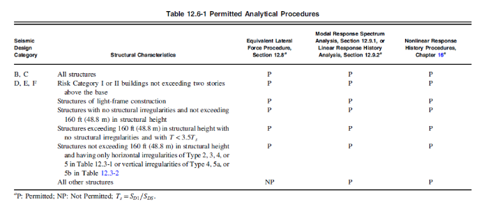Now you may be wondering, do I have to know all of these methods for the exam? The answer is no. Since the response history analysis and the modal analysis both require computer softwares, and the simplified method is not commonly used, the Seismic Exam will only test on the ELFP. Nonetheless, it is still a good idea to make sure to familiarize yourself with the table above to understand when each method can be used. This will not only be helpful for the exam, but also for your engineering practice in general. With that in mind, only the ELFP will be covered in the lecture.
Speaking of the ELFP, you have already been using procedures from this method. Remember the approximate fundamental period calculated in Lecture 5? That was actually part of this analytical procedure! To recap, the fundamental period is the ‘longest’ period of a structure. Since the determination of the actual building period is complicated, ASCE 7-16 has a code-permitted method to approximate the building period Ta.
The ELFP uses the approximate fundamental period Ta to determine the seismic response coefficient Cs. Remember that structures are designed to behave inelastically if an earthquake occurs. To account for the inelastic performance of buildings in these events, the Cs value is defined as a spectral acceleration that is tied together with the response modification factor R and the importance factor Ie. The Cs factor represents the inelastic design response spectrum, which is used for seismic analysis. This will be discussed in further detail in the following sections.
Base Shear - ELFP
If there’s one section to be sure of, it’s this one. If you can become an expert at determining the seismic demand, otherwise known as the base shear, you will feel comfortable with at least half the exam. We’ll evaluate the specific nuances of base shear throughout this section. So, for right now just remember that base shear is the total horizontal force resisted through a structure’s lateral resisting system as the mass of the building accelerates due to ground shaking.
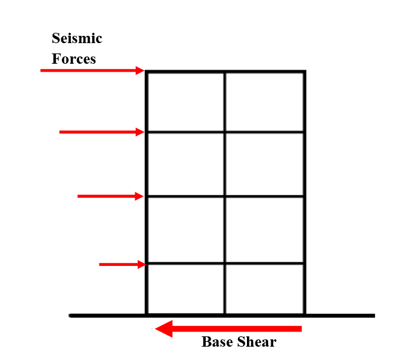To start, let’s review the components of base shear, and then locate those components in ASCE 7-16.
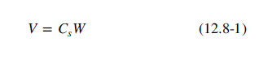We’ve got an equation to determine the seismic base shear. It’s the weight of the building multiplied by acceleration to determine the force, but Cs is not purely just acceleration. There are a few components that are worked into it. In the Cs factor, we have acceleration divided by the response modification factor R (ductility), and multiplied by the seismic importance factor, Ie. For very important structures, we want to lower the chance of collapse and be operational afterward. For instance, if Ie is 1.5 for a hospital, this will increase the forces and thus improve the performance of the structure for a design level earthquake as well as a maximum considered earthquake. Then, we have the R-value to reduce the seismic loads by taking fictitious elastic force that won't be seen and converting it into inelastic force to account for the realistic behavior of a structure.
When you look into ASCE 7-16, you’ll see many equations for the acceleration. Let’s take a look at the graph and break down the meaning behind each equation.
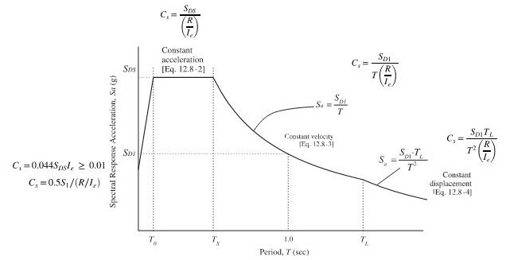The above graph is a plot of maximum accelerations experienced on different SDOF (single degree of freedom) systems that were subjected to a multitude of ground motions. Luckily, the structural response results (acceleration, velocity, displacement) tend to follow certain patterns due to the physical nature of SDOF systems. Even if a SDOF is a simple system, it is not a straight line. Thus, we see different “regions” in the graph. We will explore these regions and see how they are tied to seismic design.
As a recap, T is our fundamental period of a structure where we can determine an approximate method or through a computer for an exact value. But why are there so many methods to determine T? If I can enter this graph at a higher period, what would happen? This would mean that the accelerations and design forces are lower; thus, it is more beneficial as a designer if we can demonstrate that the period of our structure is long. Hence, material and cost can be reduced significantly.
Notice there are values on the x-axis that effectively separate the acceleration, displacement, and velocity constant regions. These values are divider lines for which part of the graph your specific building period fits into. T0 represents the short period ground motion, which is also the start of maximum amplification plateau. TS is the characteristic period of ground motion, which is a function of seismicity and the site. TL is the long period transition period. Each of these values can be calculated as follows:
- $$ T_0 = \ 0.2 S_D_1/ \S_D_S $$
- $$ T_S = \S_D_1/ \S_D_S $$
- TL can be determined from ASCE 7-16 Figure 22-14 to Figure 22-19
Now, let's look at the Cs equations.

As we can see, the constant acceleration part of the spectrum controls where 0 < T < Ts. Note, there is no explicit Cs equation for the period < To because of the R-value. We covered in the previous lecture that if a building behaves inelastically, the period will increase. Since it was determined that the inelastic response will be exaggerated in this range, there is no need to determine the Cs for this range. As a result, there is no Cs equation for periods < To.
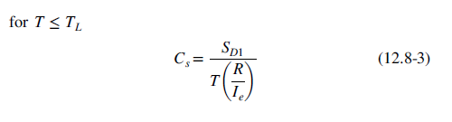Equation 12.8-3 represents the constant velocity, where Ts < T < T L . TL is the long period transition period, which is provided in ASCE 7-16 from figures 22-14 through 22-19. T L ranges from 4 to 16 seconds in various regions in the United States.
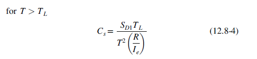Equation 12.8-4 represents the constant displacement of the spectrum, where T>T L . Based on the values given in ASCE 7-16 for TL, this equation is more commonly applied to tall and flexible structures.
Note, we still have minimums for all accelerations values for Cs minimum to check which controls.
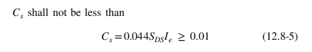Equation 12.8-5 is the minimum base shear that provides an allowable strength based on the approximate weight of the structure. This equation is considered in all cases for the minimum to check whether Cs shall be greater than 0.044SDSIe. In the case where Cs is less than 0.044SDSIe, then you shall use the value from 0.044SDSIe.
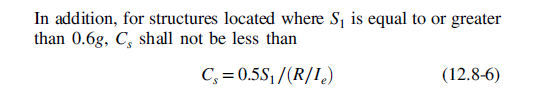Equation 12.8-6 takes into consideration potential earthquakes that can elongate the period of a building, which is known as pulse effects. This causes a building to absorb a large amount of energy in a short amount of time, which can increase long periods. For example, on a seismograph, you would see a great deal of amplitude in a short-range. You can only use equation 12.8-6 when S1 is equal to or greater than 0.6g.
Maximum SDS Value for Cs
In addition, there is one section to be aware of because it can be helpful in practice. ASCE 7-16 section 12.8.1.3 introduces the “maximum SDS value in the determination of Cs and Ev”, where if all of the required criteria are met, then you can use SDS = 1.0. The structure of interest must:
- not have irregularity
- Not exceed five stories
- Not have a fundamental period that is greater than 0.5s
- Have a redundancy factor of 1.0
- Be site class of E or F
- Be risk category of I or II
Note that this only applies to buildings with very short periods. Two new concepts will be covered in further detail in later lectures: irregularity and redundancy factor.
Practice Problems
Question: What is the seismic response coefficient (Cs) of the following structure? A seismic engineer wants to design a 45 ft residential house in Pleasant Hill, CA, where site class = D. SS = 1.777, S1 = 0.6, R = 6.5.
Solution:
Step 1: Determine SDSand SD1. Start by determining the site class. Check ASCE 7 Table 20.3-1. In the problem statement, it states that the site class D. With our site class determined, we can determine acceleration parameters. Refer to ASCE 7 section Tables 11.4-1 and 11.4-2. Plugging in Site Class D with the given S1 , SS values, we get Fa = 1.0, Fv = 1.7. Use eqn 11.4-1 and 11.4-2, to determine MCE level accelerations.
SMS = Fa SS = (1.0) x (1.777) = 1.777
SM1 = Fv S1 = (1.7) x (0.6) = 1.02
Using ASCE 7-16 eqn 11.4-3 and 11.4-4, we determine SDS and SD1.
SDS = (⅔)(SMS) = (⅔) x (1.777) = 1.184g
SD1 = (⅔)(SM1) = (⅔) x (1.02) = 0.68g
Step 2: Determine the Risk Category. Check CBC Table 1604.5 for the risk category. Again, we should always check CBC Chapter 3 when we are unsure what category a residential home applies to. So for this problem, let’s check out section 310.1 to see additional definitions for occupancy categories. CBC Section 310.1 notes that residential homes shall be classified as Group R. Referencing back to Table 1604.5, Group R shall be categorized under Risk Category II.
Step 3: Determine seismic importance factor, Ie
Now that we know our risk category, refer to ASCE 7-16 Table 1.5-2, Ie = 1.0 for risk category II structures.
Step 4: Determine the seismic response coefficient, Cs
$$\C_s = \S_D_S / (R/I_e) = \ 1.184 / (6.5/1.0) = 0.182$$
$$\C_s_m_a_x = \S_D_1 / (T(R/I_e))$$ per ASCE 7-16 Eqn. 12.8-3
$$T = T_a = C_t h_n^x$$ per ASCE 7-16 Equation 12.8-7 and Table 12.8-2
Where Ct = 0.02
X = 0.75
$$T_a = (0.02)(45)^0.75 = 0.347$$
$$\C_s_m_a_x = \S_D_1 / (T(R/I_e)) = \ 0.68 / (0.347(6.5/1.0)) = 0.301$$
$$\C_s_m_i_n = 0.044S_D_SI_e = (0.044)(1.184)(1.0) = 0.052$$
So let’s check whether:
- $$ C_s ≤ \S_D_1 / (T(R/I_e)) $$
0.182 ≤ 0.301 ✔
- $$ C_s ≥ 0.044S_D_SI_e $$
0.182 ≥ 0.052 ✔
Answer: Since 0.182 controls, you will use this value for the seismic response coefficient when calculating base shear if asked.
Question: What is the seismic response coefficient (Cs) of the following structure? A seismic engineer wants to design a 40 ft wood framed assisted living facility in New Madrid, MO. SS = 3.153, S1 = 1.246, R = 6.5.
Solution:
Step 1: Determine SDSand SD1. Start by determining the site class. Check ASCE 7 Table 20.3-1. In the problem statement, no information is given on site class, so it is safe to assume site class D . With our site class determined, we can determine acceleration parameters. Refer to ASCE 7 section Tables 11.4-1 and 11.4-2. Plugging in Site Class D with the given S1 , SS values, we get Fa = 1.0, Fv = 1.7. Use eqn 11.4-1 and 11.4-2, to determine MCE level accelerations.
SMS = Fa SS = (1.0) x (3.153) = 3.153
SM1 = Fv S1 = (1.7) x (1.246) = 2.12
Using ASCE 7-16 eqn 11.4-3 and 11.4-4, we determine SDS and SD1.
SDS = (⅔)(SMS) = (⅔) x (3.153) = 2.102g
SD1 = (⅔)(SM1) = (⅔) x (2.12) = 1.41g
Step 2: Determine the Risk Category. Check CBC Table 1604.5 for the risk category. We should always check CBC Chapter 3 when we are unsure what category the given structure is! So for this problem, let’s check out section 308 to see additional definitions for occupancy categories. CBC Section 308.3 notes that assisted living facilities shall be classified as Group I-1. Referencing back to Table 1604.5, Group I-1 shall be categorized under Risk Category III.
Step 3: Determine seismic importance factor, Ie
Now that we know our risk category, refer to ASCE 7-16 Table 1.5-2, Ie = 1.25 for risk category III structures.
Step 4: Determine the seismic response coefficient, Cs
$$\C_s = \S_D_S / (R/I_e) = \ 2.102 / (6.5/1.25) = 0.404$$
$$\C_s_,_m_a_x = \S_D_1 / (T(R/I_e))$$ per ASCE 7-16 Eqn. 12.8-3
$$T = T_a = C_t h_n^x$$ per ASCE 7-16 Equation 12.8-7 and Table 12.8-2
Where Ct = 0.02
X = 0.75
$$T_a = (0.02)(40)^0.75 = 0.318$$
$$\C_s_m_a_x = \S_D_1 / (T(R/I_e)) = \ 1.41 / (0.318(6.5/1.25)) = 0.85$$
$$\C_s_m_i_n = 0.044S_D_SI_e = (0.044)(2.102)(1.25) = 0.116$$
But also note, the problem statement mentions S1 = 1.246. ASCE 7-16 Eqn 12.8-6 states that when S1 is greater than or equal to 0.6; then, we must check this equation as well.
$$\C_s_m_i_n = \ 0.5S_1 / \(R/I_e) = \ 0.5(1.41) / \(6.5/1.25) = 0.135$$
So let’s check whether:
- $$ C_s ≤ \S_D_1 / (T(R/I_e)) $$
0.404 ≤ 0. 85 ✔
- $$ C_s ≥ 0.44S_D_SI_e $$
0.404 ≥ 0.116 ✔
- $$ C_s ≥ \ 0.5S_1 / \(R/I_e) $$
0.404 ≥ 0.135 ✔
Answer: Since 0.404 check out with each criteria, you will use this value for the seismic response coefficient when calculating base shear.
Question: What is the seismic response coefficient (Cs) of the following structure? The city of Minneapolis noticed that the Wells Fargo Center was sinking 30” into the ground and decided to demolish the building as it is too hazardous for human safety. However, Wells Fargo wants to establish a taller building than the previous, so they want you, as the seismic engineer, to design an office building that can meet their expectations. Wells Fargo wants a 800 ft tall steel moment resisting frame. SS = 0.048, S1= 0.029, TL = 4 s.
Solution:
Step 1: Determine SDSand SD1. Start by determining the site class. Check ASCE 7 Table 20.3-1. In the problem statement, no information is given on the site class, so assume site class D for demonstration purposes, but refer to a geotechnical report for an accurate soil profile. With our site class determined, we can determine acceleration parameters. Refer to ASCE 7 section Tables 11.4-1 and 11.4-2. Plugging in Site Class D with the given S1 , SS values, we get Fa = 1.6, Fv = 2.4. Use eqn 11.4-1 and 11.4-2, to determine MCE level accelerations.
SMS = Fa SS = (1.6) x (0.048) = 0.076
SM1 = Fv S1 = (2.4) x (0.029) = 0.07
Using ASCE 7-16 eqn 11.4-3 and 11.4-4, we determine SDS and SD1.
SDS = (⅔)(SMS) = (⅔) x (0.076) = 0.051g
SD1 = (⅔)(SM1) = (⅔) x (0.07) = 0.05g
Step 2: Determine the Risk Category. Check IBC Table 1604.5 for the risk category. Let’s check IBC Chapter 3 which category Wells Fargo center falls under. So for this problem, let’s check out section 304 to see additional definitions for occupancy categories. IBC Section 304.1 notes that office buildings shall be classified as Group B. Referencing back to Table 1604.5, Group B shall be categorized under Risk Category II. Note that IBC is used instead of CBC since the problem states that the location is in Minneapolis.
Step 3: Determine seismic importance factor, Ie and Response modification factor R.
Now that we know our risk category, refer to ASCE 7-16 Table 1.5-2, Ie = 1.0 for risk category II structures. In the problem statement, it states that the office building should be a steel moment resisting frame, so refer to ASCE 7-16 Table 12.2-1 where R = 8.
Step 4: Determine the seismic response coefficient, Cs
$$\C_s = \S_D_S / (R/I_e) = \ 0.051 / (8/1.0) = 0.006375$$
Notice that TL = 4. Refer to equations 12.8-3 and 12.8-4. We will need to determine the approximate fundamental period to compare.
$$T = T_a = C_t h_n^x$$ per ASCE 7-16 Equation 12.8-7 and Table 12.8-2
Where Ct = 0.028
X = 0.8
$$T = (0.028)(800)^0.8 = 5.88 seconds$$
Since 5.88 s > 4s, we will use only equation 12.8-4.
$$\C_s_,_m_a_x = \ S_D_1T_L / \(T^2(R/I_e)) = \C_s_,_m_a_x = \ 0.05 4 / \(5.88^2(8/1.0)) = 0.00072$$
$$\C_s_,_m_i_n = 0.044S_D_SI_e = (0.044)(0.051)(1.0) = 0.002244$$
Let’s check whether:
- $$\C_s ≤ \ S_D_1T_L / \(T^2(R/I_e)) $$
0.006375 ≤ 0.00072 ✖
- $$ C_s ≥ 0.44S_D_SI_e $$
0.006375 ≥ 0.002244 ✔
Answer: Since Cs is not less than or equal to $$ \ S_D_1T_L / \(T^2(R/I_e)) $$, the governing value to use is 0.00072 for the seismic response coefficient.
Question: What the minimum Cs of the following structure? The University of Wisconsin wants to design more parking garages on campus so more space is viable for those with cars. A 4-story parking structure shall be designed as special reinforced concrete shear walls with a height of 40 ft, where site class = E. SS = 3.0, S1 = 0.05.
Solution:
Step 1: Determine the approximate fundamental period
$$T = T_a = C_t h_n^x$$ per ASCE 7-16 Equation 12.8-7 and Table 12.8-2
Where Ct = 0.02
X = 0.75
$$T = (0.02)(40)^0.75$$ = 0.318 seconds
Step 2: Determine SDSand SD1. Start by determining the site class. Check ASCE 7 Table 20.3-1. In the problem statement, it states that the site class = E. With our site class known, we can determine acceleration parameters. Refer to ASCE 7 section Tables 11.4-1 and 11.4-2. Plugging in Site Class E with the given S1 , SS values, we get Fa = 2.4, Fv = 4.2. Use eqn 11.4-1 and 11.4-2, to determine MCE level accelerations.
But remember, in ASCE 7-16 section 12.8.1.3 notes that if you have met these requirements, we can take a reduction in our SDS if the structure of interest does:
- not have irregularity
- Not exceed five stories
- Not have a fundamental period that is greater than 0.5s
- Have a redundancy factor of 1.0
- Have site class of E or F
- Have risk category of I or II
So let’s check whether we meet these requirements. We know that our structure does not exceed 5 stories. Also, the site class is F with risk category II, and the calculated fundamental period is less than 0.5 s. If the problem does not state anything about irregularity or redundancy, it is OK to assume that the building does not have irregularity and meets the redundancy factor of 1.0. Now that we meet all the requirements, we can use SDS = 1.0!
SM1 = Fv S1 = (4.2) x (0.05) = 0.21
Using ASCE 7-16 eqn 11.4-4, we determine SDS and SD1.
SDS = 1.0
SD1 = (⅔)(SM1) = (⅔) x (0.21) = 0.14g
Step 3: Determine the Risk Category. Check CBC Table 1604.5 for the risk category. Checking CBC Chapter 3 when we are unsure what category a parking garage falls under. So for this problem, let’s check out section 311 to see additional definitions for occupancy categories. CBC Section 311.3 notes that parking garages shall be classified as Group S-2. Referencing back to Table 1604.5, Group S-2 shall be categorized under Risk Category II.
Step 4: Determine seismic importance factor, Ie and Response modification factor R.
Now that we know our risk category, refer to ASCE 7-16 Table 1.5-2 = 1.0 for risk category II structures. In the problem statement, it states that the office building should be a special reinforced concrete shear walls system, so refer to ASCE 7-16 Table 12.2-1 where R = 6.
Step 4: Determine the seismic response coefficient, Cs
$$\C_s = \S_D_S / (R/I_e) = \ 1.0 / (6/1.0) = 0.166$$
$$\C_s_,_m_a_x = \S_D_1 / (T(R/I_e)) = \ 0.14 / (0.318(6/1.0)) = 0.073$$
$$\C_s_,_m_i_n = 0.044S_D_SI_e = (0.044)(1.0)(1.0) = 0.044$$
So let’s check whether:
- $$ C_s ≤ \S_D_1 / (T(R/I_e)) $$
0.166 ≤ 0. 073 ✖
- $$ C_s ≥ 0.44S_D_SI_e $$
0.166 ≥ 0.044 ✔
Answer: Since Cs is not less than or equal to $$ C_s ≤ \S_D_1 / (T(R/I_e)) $$, the governing value to use is 0.073 for the seismic response coefficient.